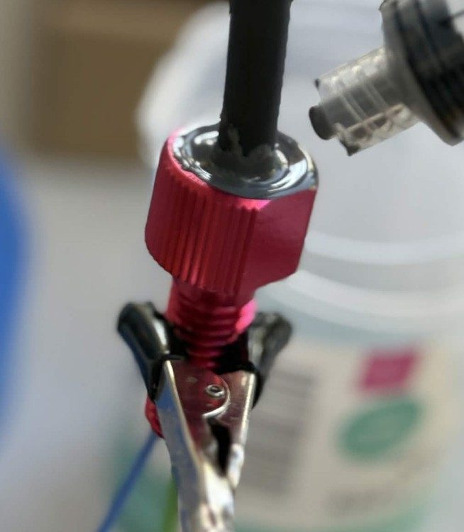
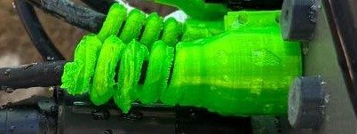
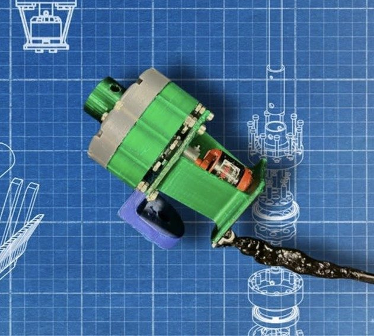
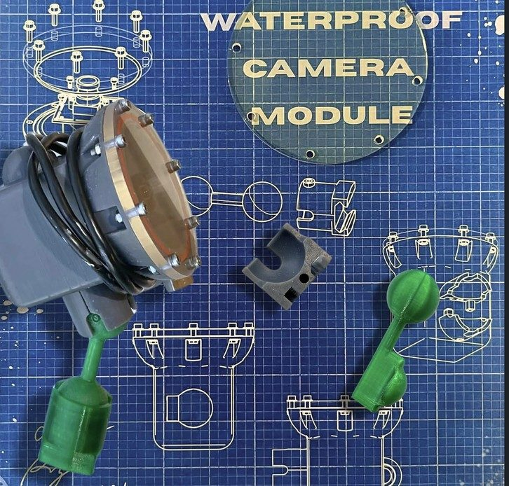

Crush Depth 2026
Overview
As Co-CEO and Chief Design Officer I created the team's design philosophy (function, form, maintainability, manufacturability, safety) and standardized M3/M5 hardware across the 4 mechanical sub-teams to simplify assembly and field repair. 48 members, 3,532 build hours, $5,383, under 15 kg, eight thrusters, 6-DOF. 2026 MATE ROV World Championship, Explorer class, St. John's, Newfoundland.

Cable Penetrators
The 2025 season's commercial WetLink penetrators leaked repeatedly due to assembly error, maintenance error, and manufacturer defects. I phased them out for epoxy-potted pass-throughs and wrote procedures to ensure a dependable seal no matter who made it. I also created neon green TPU “pigtail” cable strain relief to protect pass throughs from any potential ROV impacts. At the backplate I incorporated Subconn wet-mateable connectors, setting requirements and test criteria with a manufacturer's applications engineer, so the vehicle could be easily broken down for the flight to Newfoundland and remated on site.



Cycloidal Drive
I designed and manufactured a cycloidal drive for the BLDC-powered rotating end effector used in biofouling removal. The drive was a 10:1 ratio SLA printed for high accuracy and reliability.

Camera Cases
Eight FDM printed and acetone sealed iterations failed leak testing. After comparing to Davis' RoboSub team's approach, I redirected the design to an SLA compression-ring housing. Four housings were finished, leak-free through the season.